Character · Van der Linde gang
Lenny Summers
Lenny Summers is a young gunman of the Van der Linde gang in Red Dead Redemption 2 (2018), set in 1899. According to the Red Dead Wiki, his parents were former slaves. Educated by his father, he has been on the run since he killed the men who murdered his father when he was fifteen. A recent recruit, he takes part in most of the gang's big jobs of 1899 alongside Arthur Morgan, from the robbery of Cornwall's train to the raid on Shady Belle and the Valentine bank. He is shot down on a rooftop in Saint Denis during the gang's failed bank robbery, on the same day as Hosea Matthews.
He is played by Harron Atkins, who provides his voice and motion capture.
- Full name
- Leonard Summers (the name on his father's letter)
- Born
- Not given in the game (Red Dead Wiki estimate: around 1880)
- Died
- 1899, Saint Denis, shot by Pinkerton riflemen on the rooftops in "Banking, The Old American Art"
- Status
- Deceased; buried beside Hosea Matthews in Bluewater Marsh
- Nationality
- American
- Family
- Father (killed when Lenny was fifteen), mother; an uncle who helped educate him, according to an official guide
- Affiliation
- Van der Linde gang (a recent recruit in 1899)
- Role
- Gunman of the gang
- Games
- Red Dead Redemption 2
- Played by
- Harron Atkins (voice and motion capture)
Biography
Origins
The games give no exact birth date for Lenny Summers. The Red Dead Wiki places his birth around 1880, and the newspaper article on his death gives his age as nineteen (see Chapter 5). According to the wiki, both his parents had been enslaved. The wiki also tells a family story centered on the overseer of a cotton plantation. This man separated Lenny's future mother from her own mother at birth, and he went on harassing the grandmother after the Civil War until she killed him and fled, barely escaping a lynch mob. Lenny's mother never saw her again; she later married Mr. Summers, Lenny's father.
A letter from his father can be found at the camp. It is dated January 12, 1894, and was written three days after Lenny and his mother saw the father off at a train platform. The father admits that he has sometimes been "more tutor than father" to his son and mentions his own lectures about Lenny's future as a lawyer. He tells the boy that he has "redeemed more than you know". He expects to see them again the following Sunday, and he asks Lenny to clear the snow from the yard before his return, to read the letter aloud to his mother and to say "is not" where the letter says it, never "ain't". According to the Red Dead Wiki, the father also gave Lenny a pocket watch that he had himself received from his former owner.
The official guide says that his father was attacked and killed by drunks one night as he walked home. Lenny, then fifteen, stole a gun and shot all of them. He spent the next three years on the run from lawmen and bounty hunters west of the Lannahechee River. According to the Red Dead Wiki, he joined the Dutch van der Linde gang in the Grizzlies around December 1898; the wiki bases this on a remark by Arthur Morgan, during a coach robbery in 1899, that Lenny has been with them for six months. The game does not show what he did during the failed ferry robbery in Blackwater. The wiki's character page says that he lost his father's watch in the chaos there, while its page on the massacre reads a campfire talk with Sean MacGuire, in which Lenny asks what started the trouble, as a sign that he was not present. His feelings for Jenny Kirk, a recent recruit who was wounded in the Blackwater job and died before the gang reached Colter, are covered under Relationships.
Red Dead Redemption 2 (1899)
Chapter 1: Colter
After Blackwater, the gang takes shelter in Colter, an abandoned mining town in the snow. In "Outlaws from the West", Lenny is on watch when riders approach the camp. He raises his Carbine Repeater, recognizes Dutch and calls everyone out of the cabins. Dutch brings back Sadie Adler, found at a homestead raided by the O'Driscolls; he hands his lantern to Lenny, who takes his horse's lead rope, and thanks him. In "Enter, Pursued by a Memory", Arthur and Javier Escuella bring back John Marston, mauled by wolves. Lenny and Bill Williamson pull him off Javier's horse so roughly that Javier calls them idiots, then carry him to a bed in a cabin.
"Old Friends" opens in the men's cabin, where Micah Bell accuses Bill and Lenny of having turned yellow after a few days on the run, then makes an exception for Lenny, who tells him to shut up. When Bill says the others miss those who fell, Micah answers that he wants no fuss when his own time comes; Lenny replies that there will be a party, and he and Bill laugh. Micah punches Bill in the face, and Arthur, Javier and Lenny hold the two men apart until Dutch bursts in. Dutch then leads Arthur, Micah, Bill, Javier and Lenny against the O'Driscoll camp at Ewing Basin. From a cliff above it, he posts Lenny and Javier higher up to pick off the O'Driscolls, while he and Arthur creep down. After the fight, the two bring the horses down to the camp, and Micah remarks on how late they are.
In "Who the Hell is Leviticus Cornwall?", the gang robs a train belonging to Leviticus Cornwall. Dutch gives Lenny and Javier the two front cars and their guards. On the ride, he praises Lenny as always the first man on his horse, and Javier asks the young man whether he is really ready. Bill's dynamite fails to go off. Arthur, Javier and Lenny run to the far end of a tunnel and jump onto the roof of the train: Javier falls off, and Lenny ends up hanging from the side of a car, shouting for help. Arthur can pull him up; if he does not, Lenny climbs up alone and thanks him sarcastically. Lenny asks where Javier is, and Arthur answers that the others will pick him up. Inside the first car, Lenny kills a guard silently with his knife. Arthur then decides whether he or Lenny takes out the next guard, which starts the gunfight.
As they fight their way forward, Lenny wonders aloud what Bill was doing with the charge; Arthur admits that he wired the detonator himself and asks him not to mention it. Near the locomotive, the engineer jumps out of the coal bin and attacks Arthur with a shovel (according to the mission page, if Lenny is ahead, the engineer goes for Lenny instead and Arthur has to save him); Lenny has no clear shot, and Arthur throws the man off the train as it crosses a bridge, then stops it. More guards pour out of the cars, and the two men hold them off until Dutch, Javier, Bill, Charles Smith and Micah arrive. Arthur congratulates Lenny on his shooting. Once Arthur and Charles have blown open the last car with dynamite, Dutch sends Arthur, Lenny and Micah to search Cornwall's private car. Micah orders Lenny to pour him a brandy; Lenny retorts that he and Arthur did all the work, and Arthur backs him up. Micah opens the safe, finds only papers and hands them to Lenny, remarking that at least he can read. Lenny finds sugar imports and an order for a new boat from Europe, and Arthur finds the bearer bonds.
In "Eastward Bound", the gang leaves the mountains. Lenny loads the wagons with Bill before the departure. Once the convoy is out of the snow, Dutch calls Lenny and Micah over and sends them ahead to make sure there are no surprises on the road. Micah complains about being paired with "the boy", then tells Lenny that he can buy him a whisky, and the two ride off. According to the mission page, they are briefly at the new camp of Horseshoe Overlook after the mission; Susan Grimshaw then tells Arthur that she has sent them scouting out west.
Chapter 2: Horseshoe Overlook
The scouting trip lasts longer than expected. In "Exit, Pursued by a Bruised Ego", while riding out with Hosea Matthews to hunt a bear, Arthur tells him that Susan sent the two out, that he does not understand why she chose Micah, and wonders why the two have not come back (Hosea's answer is under Relationships). The pair end up in Strawberry. There, Micah kills two men in a drunken fight, O'Driscolls according to the Red Dead Wiki, and is jailed by Sheriff Hanley, who plans to hang him. According to the Red Dead Wiki, Lenny barely escaped a lynch mob in Strawberry himself and galloped back to camp.
"A Quiet Time" begins when Lenny reaches camp with the news that Micah is to hang. Dutch tells Arthur to deal with Micah later and first to take the young man for a drink in Valentine, not Strawberry. At Smithfield's Saloon, the two start drinking until a patron named Jeb pesters them, and Arthur charms, threatens or hits him. As the night goes on, Arthur keeps losing Lenny. He finds him upstairs, trying to balance a shot glass on his forehead before it falls over the railing and smashes; later, standing on the bar counter, fending off two men; Arthur ends up line dancing with the customers. By the third search, Arthur is so drunk that he sees Lenny's face on every patron. Lenny finally finds him, the two trade slaps and go back to drinking. When Jeb returns and takes Arthur's glass, they drag him outside and hold him over a water trough.
Arthur can let Jeb go, try to hold his head under water or half drown him. Deputies arrive in every case, and Lenny, who is busy vomiting, is caught at once, while Arthur runs. The mission page lists six endings. If Arthur is caught too, the two wake up in the Valentine jail, charged with assault or, if Arthur held Jeb under until he passed out, with attempted murder; they post bail, Lenny throws up in the street outside the sheriff's office, and they go back to camp separately. If Arthur escapes, he wakes up, sick, just south of the camp. Back at camp, Lenny either says he has no idea what happened during the escape or explains that he was arrested and had to pay bail, and compares the night to what Micah did in Strawberry. After this mission, the Red Dead Wiki notes, he is usually found in camp with a newspaper or on guard at the edge of it.
Chapter 3: Clemens Point
The gang moves south to Clemens Point, in Lemoyne. In "Preaching Forgiveness as He Went", Lenny calls Arthur over with a lead: the Lemoyne Raiders, former Confederates who still dream of an army, are sitting on a large stock of weapons at Shady Belle, an old manor deep in the woods, which they can sell to fund their operations. According to the Red Dead Wiki, he heard about them from the Black community in Rhodes. Arthur agrees to take a look. On the ride, the two talk about how much harder people in the South are on anyone who is not white than people out West. Lenny admits this makes him uneasy but says he wants to do his part, and Arthur assures him that Dutch and those who count notice what he does for the gang.
Near Bolger Glade, they spot a wagon loaded with dynamite and follow it to the manor without being seen. Arthur studies the place through a scoped rifle. He can then send Lenny in to approach the Raiders as a friend and draw them out, or shoot a crate of dynamite in the yard. Either way, a gunfight breaks out, and the two men kill the Raiders. They find a wagon full of weapons, take it and drive off. Shortly after leaving the woods, three more Raiders stop them on the road and are shot down. Back at Clemens Point, Arthur takes a Bolt Action Rifle from the haul for himself, and the two thank each other.
In "Sodom? Back to Gomorrah", Bill and Karen Jones bring Arthur their plan to rob the Valentine bank, prepared since Horseshoe Overlook. When Bill complains that his own mistakes get him called a fool while Arthur's are put down to bad luck, Lenny and Karen agree with him, and Arthur agrees to join the job. On the ride, Lenny says that he first thought the job a bad idea, then decided that every idea looks bad if you think about it long enough, and that he told the others they needed Arthur. If Arthur has already been to Shady Belle, he congratulates Lenny on that job; Lenny says the Raiders would have loved to hang him, and Arthur answers that Lenny will outlive the lot of them. The two also agree to skip the saloon this time.
In Valentine, Karen goes into the bank first as a distraction, playing a drunk or a lost woman. Arthur, Bill and Lenny then burst in. Lenny orders everyone not to move and hands Karen the key to the door behind the counter, and Arthur takes the teller to the vault. While Arthur cracks the safes or blows them with dynamite, Lenny guards the hostages, threatens to shoot one of them in the leg if he moves again and worries that the job is taking too long. On the way out, Bill tells Lenny to go right, and the four fight their way to the horses if the law has been alerted. A passing train lets them shake off the lawmen, and they split the money; the mission page gives Arthur's reward as $2,500.
When Jack Marston disappears after the Rhodes ambush in which Sean is killed, Lenny rides to Braithwaite Manor in "Blood Feuds, Ancient and Modern" with Dutch, Arthur, Hosea, John, Charles, Bill and Javier, while Micah and Kieran Duffy guard the camp. The next morning, in "The Battle of Shady Belle", Lenny warns Dutch that they have a problem as the Pinkerton agents Andrew Milton and Edgar Ross walk into Clemens Point. Milton offers the others three days to disappear if Dutch gives himself up. The gang refuses, and Lenny moves to show the agents out, which earns him an order from Milton to take his hands off him. Arthur suggests moving to Shady Belle, the house he and Lenny cleared, and Dutch sends Lenny to follow the two agents and make sure they leave. On the way to the manor, Arthur tells John that Lenny found the place, and that it is where they got the dynamite for the bank job.
Chapter 4: Saint Denis
Once Jack has been brought back from the mansion of Angelo Bronte, the Saint Denis crime boss invites the gang to Mayor Henri Lemieux's garden party. In "The Gilded Cage", Lenny drives the coach that takes Dutch, Arthur, Hosea and Bill there in evening dress; on the way, the passengers laugh that the guest of honor is a crime lord. He picks them up at the end of the evening, which Dutch announces with "Here comes Lenny". Bronte has given Dutch a target, a trolley station in the city. In "Horsemen, Apocalypses", Dutch tells Arthur that they need a third man for the job. Arthur proposes Lenny, and when Dutch asks why not Micah, Arthur answers that Micah is too reckless.
In "Urban Pleasures", Arthur meets Dutch and Lenny in an alley across from the trolley station, where Dutch talks about taking the gang to Australia or Tahiti. The three mask up and announce the robbery. Arthur robs three customers on Dutch's orders and makes the clerk open the safe, which holds only a few dollars, just as Lenny sees the street filling with police. Bronte has set them up. The three jump onto a passing trolley and shoot their way through the streets until the brakes fail and the car overturns into a fence. On foot, then in a wagon driven by Lenny while Dutch and Arthur fight off the pursuing police, they get out of the city. Each of them ends up with fifteen dollars and a quarter. According to the Red Dead Wiki, Lenny leads most of the escape and is praised for it afterwards. Dutch decides that the Saint Denis bank is now their only way out, and Lenny drives him back to camp.
In a companion activity available in this chapter, Lenny brings Arthur a plan to rob a Boles Overland banking coach south of Bolger Glade, on a tip he says comes from a reliable source. According to the Red Dead Wiki, Lenny first wants to go alone, and Arthur insists on coming. Arthur has doubts about the tip. The two wait in cover, and Lenny holds up the driver and his guard, but U.S. Marshals ride up and more guards climb out of the coach: the job is a trap. The two men shoot their way out, Lenny takes 100 dollars from the coach and Arthur gets 25. Arthur warns him that stage companies set up such traps all the time to catch men like them.
After the trolley station trap, Dutch takes his revenge on Bronte. In "Revenge is a Dish Best Eaten", a fisherman lands Dutch, Arthur, John, Bill and Lenny at the pier behind Bronte's mansion. They climb the wall and fight their way through Bronte's men, John knocks Bronte out upstairs, and the gang fights off the police while carrying him to the boat. On the way back, Dutch drowns him and throws the body to an alligator. The gang then prepares the robbery that Hosea presents as their last score, the Lemoyne National Bank in Saint Denis, which is meant to pay for leaving the country.
Lenny is part of the crew in "Banking, The Old American Art". While Hosea and Abigail set off a diversion, the others walk into the bank, and Arthur forces the manager to open the vault. Pinkertons surround the building. Milton, who has caught Hosea, shoots him dead in the street when Dutch refuses to come out. Arthur blows a hole in an inside wall with dynamite, and the gang climbs to the roof; John is arrested by the Pinkertons. On the rooftops, Lenny leads the way across. Two Pinkerton riflemen shoot him down on the rooftop. Arthur goes to him and stops by his body for a moment, but the gang cannot stop, and he has to run on. Dutch, Arthur, Micah, Bill, Javier and Charles hide in an abandoned apartment until nightfall; Charles then draws the guards away at the docks so that the five others can slip aboard a ship.
Chapter 5: Guarma
The ship sinks, and Dutch, Arthur, Micah, Bill and Javier wash up on the island of Guarma. In "A Kind and Benevolent Despot", as Dutch and Arthur go through a cave, Dutch wonders aloud why Hosea and Lenny were killed at the bank while John was only arrested and Abigail got away. Back in Lemoyne, the gang members left behind move from Shady Belle to Lakay, in the bayou. When the Guarma survivors rejoin them in "Fleeting Joy", Abigail tells Dutch that they stole the bodies of Hosea and Lenny from the morgue and buried them. The two graves lie side by side in Bluewater Marsh. Arthur can visit them from "Fleeting Joy" onward, and Lenny's grave counts toward the Paying Respects trophy.
The newspaper article "Saint Denis Robbers Still on the Run", printed in the Blackwater Ledger, the Saint Denis Times and the New Hanover Gazette, reports on the robbery a few weeks later. It names Lenny Summers, nineteen, and Hosea Matthews, believed to be about 55, as the two gang members killed by the Pinkertons. It adds that their bodies were never found during the cleanup, which took several days, that a third member was arrested and awaits trial, and that the rest of the gang is still at large.
Chapter 6: Beaver Hollow
Lenny is still named in the last chapter. In "The King's Son", after Arthur tells Charles that he is dying, Charles answers that Arthur is lucky in one way: unlike Hosea, Lenny, Sean or the Callander brothers, he has time to make amends. In "Red Dead Redemption", the last mission of the chapter, Arthur rides with Sadie to rescue Abigail and lists the people they have lost, Lenny among them, before saying that they have to put an end to this.
Personality
Rockstar's character description, published on September 6, 2018, reads: "Young Lenny has been on the run since he was 15 years old after killing the men who murdered his father. Smart, educated, competent and ambitious, he is always ready to do his part." A character page from an official guide, reproduced on the Red Dead Wiki, calls him "a fairly recent addition to the gang" and adds that "his father and uncle were well-educated and gave Lenny a good schooling when he was growing up." The same page ends: "Smart, competent and ambitious, he is always ready to do his part, and is fairly happy living in a community where he is mostly judged for his ability not his appearance." Wikipedia's list of the game's characters cites The Complete Official Guide (Piggyback, 2018) for these points.
He reads and writes (see Biography). He argues with Dutch about books and tries to teach Sean to read (see Relationships). He jokes easily, including at Arthur's expense.
In his own words
The Red Dead Wiki opens its page on him with this line, with an audio clip from the game: "Before me, at least six generations were born in chains and for the last three years, I've been running from every lawman and bounty hunter west of the Lannahechee River... So yeah, I feel lucky!" On the ride to Cornwall's train, in "Who the Hell is Leviticus Cornwall?", he answers Dutch's praise with "Just happy we're back at'em, Dutch." When Javier asks whether he is ready: "'Course I'm ready."
On the way to the Valentine bank in "Sodom? Back to Gomorrah", Arthur asks him how he feels about the job: "At first, I thought, 'bad idea...' but then I figure, they all are if you think about 'em long enough." On the same ride, he looks back on his night out with Arthur in Valentine: "Yeah, next time I'll know what you mean by 'a couple of drinks.'"
Names
The gang calls him Lenny. His given name, Leonard, comes from his father's letter found in camp, "Letter to Lenny from Father" (see Origins), which opens "My Dear Leonard". Arthur uses the full name only once, in "Preaching Forgiveness as He Went", after the two have shot the three Raiders who stop them on the road. Dutch calls him young Lenny, and Bill calls him boy until Dutch tells him to stop (see Bill Williamson). The French Red Dead Wiki uses the same names.
Appearance
The guide's portrait shows a slim young man with short black hair and a thin mustache, in a white shirt with a rounded collar and suspenders, holding a pump-action shotgun. According to the Red Dead Wiki, he is slightly shorter than Arthur. On jobs he covers his face with an orange bandana; the wiki notes that most gang members wear black ones, and that only Dutch and Uncle also wear another color.
Relationships

Arthur Morgan
Arthur is the gang member Lenny rides with most: Cornwall's train, the night in Valentine, the Shady Belle raid, the Valentine bank, the trolley station and the coach job (see Biography). At the poker table and at Five Finger Fillet, according to the Red Dead Wiki, Lenny teases him about being slow at his age. In the Clemens Point camp he asks Arthur who they are really running from, the Pinkertons or Cornwall; Arthur answers that Cornwall is the one paying the Pinkertons.
In the same camp Lenny tells Arthur how uneasy he feels in the South, given where he comes from, and Arthur tells him they will be all right. At Jack's return party at Shady Belle, Arthur can shout his name the way he did in Valentine, and Lenny answers, alarmed, that it is all coming back to him. Arthur stops at his body on the rooftops of Saint Denis.

Dutch van der Linde
At Horseshoe Overlook the two debate the writings of Evelyn Miller beside Dutch's tent; Lenny keeps answering back until Dutch concedes. According to the Red Dead Wiki, Lenny dismisses Miller as a fraud and holds up the gang as a truer picture of American freedom; Dutch laughs and, if Arthur is nearby, jokingly tells him to watch out for the young man's brains. Dutch stops Bill from calling him boy (see Bill Williamson). During Jack's return party at Shady Belle, Dutch gives Lenny, Bill, Charles and Micah a speech about his new plan as a storm starts. Lenny dies during the bank robbery Dutch leads in Saint Denis.

Hosea Matthews
On the bear hunt of "Exit, Pursued by a Bruised Ego", Hosea says that Lenny has "a good head on his shoulders" and, if Micah has been rescued, that it was lucky Lenny was with him. When Hosea coughs at the campfire while talking with Abigail, Lenny or Swanson pats him on the back. According to the Red Dead Wiki, both men say in camp conversations that they want to be buried with friends. Both die in the Saint Denis bank job and are buried side by side (see Biography).
Jenny Kirk
Jenny Kirk, a recent recruit like Lenny, was wounded in the failed ferry job in Blackwater and died before the gang reached Colter. On the bear hunt, Arthur tells Hosea that Lenny was "pretty sweet on her", and Hosea replies: "Lenny and Jenny could never have worked." According to the Red Dead Wiki, Lenny suggests giving her a proper burial while the gang is at Colter and mentions her during Five Finger Fillet. The wiki adds that Micah, on an outing with Arthur, boasts that Jenny had been with him and asks whether Lenny knows; an irritated Arthur orders him to keep it to himself.

Micah Bell
Micah taunts Lenny from their first scene together in the Colter cabin, and the two are sent scouting together twice, which ends with Micah jailed in Strawberry (see Biography). In the Clemens Point camp Micah calls out that he has shot many folk like Lenny; asked what he means, Micah says cowards, and laughs as Lenny walks away. If Arthur is there, he says Micah would miss at that range. In the Guarma camp, asked by Arthur, Micah dismisses Lenny's death as pride before a fall.
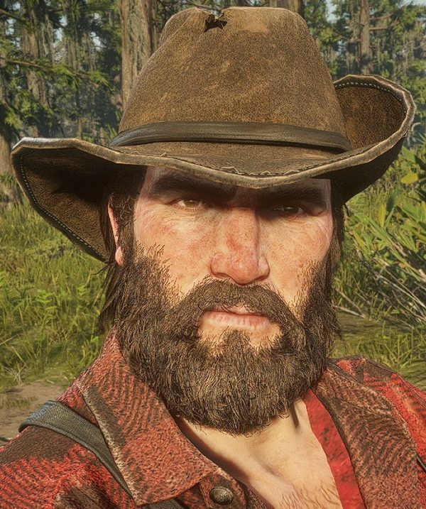
Bill Williamson
At Horseshoe Overlook Bill pushes Lenny to the ground behind John's tent; Lenny can laugh at him and tell him to get lost. Asked by Arthur, Bill complains that Lenny shows him no respect, and Arthur turns the charge back on him. When Bill calls him boy, Lenny ignores him, and Dutch tells Bill that Lenny does not like the word anymore; Bill apologizes to Dutch. After a successful coach robbery the two sit down for a friendly drink.

Sean MacGuire
At the Horseshoe Overlook poker table Lenny tries to teach Sean to read. Sean keeps putting it off, then asks him to stop: reading would only put silly ideas in his head, to which Lenny answers that this is the point, and that he will not give up on him. At Sean's return party Lenny tells Arthur how glad he is that his friend is back, and in the Clemens Point camp the two gossip about Bill. According to the Red Dead Wiki, Lenny tells Sean in another conversation that he is not sure whom to hate more, the slavers who held his ancestors or the white people who resent him now, and he calls Davey Callander a dangerous fool whom he suspects of causing the Blackwater job to go wrong.

Javier Escuella
Dutch posts Javier and Lenny together on the hill above the O'Driscoll camp in "Old Friends". Before Cornwall's train, Javier asks him whether he is ready, then misses the jump onto the train, on which Lenny lands hanging from the side of a car. Both take part in the Saint Denis bank job, in which Lenny is killed.

Charles Smith
At the Horseshoe Overlook poker table Lenny tries to start a conversation with Charles, without success. Both are part of the crews of "Blood Feuds, Ancient and Modern" and of the Saint Denis bank job. According to the Red Dead Wiki, Charles is among the survivors who take Lenny's and Hosea's bodies from the morgue.

Karen Jones
Karen and Bill, with Lenny already on board, bring Arthur in on the robbery of the Valentine bank. On the way she says: "I ain't even sure Lenny can be relied on to keep his head... not after that night you two had in Valentine."

Tilly Jackson
In the Clemens Point camp Tilly, like Lenny, tells Arthur how uncomfortable she feels in the South, and Arthur reassures her (see Arthur Morgan).

Simon Pearson
At Colter Pearson complains to Arthur that he sent Lenny and Bill hunting and they came back with nothing; Arthur answers: "Lenny's more into book reading than hunting."

Susan Grimshaw
At Colter, Susan puts Lenny in a shared room with Micah, Javier, Charles and Bill. According to the Red Dead Wiki, she scolds Lenny and Mary-Beth when they make fun of Pearson's cooking, telling them to mind their manners because Pearson takes good care of them.

Sadie Adler
Lenny is on watch at Colter when Dutch rides in with Sadie (see Biography). After the Lemoyne Raiders attack in "Further Questions of Female Suffrage", Arthur tells Lenny that Sadie did "more than fine". According to the Red Dead Wiki, Sadie is among the survivors who recover his body after the Saint Denis bank job.

John Marston
When Arthur and Javier bring John back to Colter wounded by wolves, Lenny and Bill carry him into a cabin. Both men later take part in the raid on Braithwaite Manor, the assault on Bronte's mansion and the Saint Denis bank job, where John is arrested and Lenny killed.

Abigail Marston
At Lakay, Abigail tells Dutch, back from Guarma, that the survivors took Lenny's and Hosea's bodies from the morgue and buried them (see Biography).

Jack Marston
Lenny rides to Braithwaite Manor with the men looking for the kidnapped Jack in "Blood Feuds, Ancient and Modern", and is at the campfire when the gang welcomes the boy back to Shady Belle.
Skills, weapons and horses
With the gang in 1899
Lenny takes part in most of the gang's big jobs of 1899, from Cornwall's train to the Saint Denis bank (see Biography). He also brings in his own leads: the Lemoyne Raiders' weapons at Shady Belle and the banking coach of his companion activity.
He is the partner of one companion activity, "Coach Robbery", which becomes available after "Angelo Bronte, A Man of Honor" in chapter 4 and disappears after "Country Pursuits". He is the only opponent at Five Finger Fillet in camp during chapter 2. His camp events start after "A Quiet Time"; he is away from camp while some of his missions are available, and his events end for good after "Banking, The Old American Art". If Arthur provokes too many of his companions, Lenny is one of six gang members, with John, Bill, Javier, Charles and Sean, who can knock him down and expel him from camp.
Weapons and horse
At Colter he stands watch with a Carbine Repeater. The Red Dead Wiki lists among his weapons a custom Cattleman Revolver, in worn blackened steel with an ebony grip, a custom Rolling Block Rifle in blued steel with a browned frame and maple varnish, a Pump-Action Shotgun and a Bolt Action Rifle; it also shows his knife. His horse, according to the same wiki, is Maggie, a light palomino Mustang mare, which carries him out of Strawberry and through his jobs of 1899.
Missions
The English Red Dead Wiki lists 13 story missions of Red Dead Redemption 2 for Lenny, from the arrival at Colter to the Saint Denis bank robbery in which he dies, plus two companion activities. The French edition gives the same 13 missions. Every mission on the list shows him on screen. The second table adds missions in which he appears without being listed, or in which other characters talk about him. Lenny does not appear in Red Dead Redemption, set after his death. The character page records no named victim for him; in missions he fights unnamed guards, Raiders, lawmen and marshals alongside Arthur.
Missions listed by the Red Dead Wiki
| Mission | Chapter | Lenny's role |
|---|---|---|
| Outlaws from the West | 1. Colter | On watch at Colter. Spots the riders, recognizes Dutch and calls the camp out, then takes his horse. |
| Old Friends | 1. Colter | Mocked by Micah in the men's cabin, helps separate him from Bill. Covers the raid on the O'Driscoll camp from the heights with Javier. |
| Who the Hell is Leviticus Cornwall? | 1. Colter | Jumps onto Cornwall's train with Arthur, fights through the cars with him and reads the papers found in the private car's safe. |
| Eastward Bound | 1. Colter | Loads the wagons, then rides ahead of the convoy with Micah to scout the road. |
| A Quiet Time | 2. Horseshoe Overlook | Brings the news of Micah's arrest in Strawberry, then spends a drunken night with Arthur at Smithfield's Saloon in Valentine and is arrested. |
| Preaching Forgiveness as He Went | 3. Clemens Point | Mission giver. Leads Arthur to the Lemoyne Raiders at Shady Belle; the two kill them and steal a wagon of weapons. |
| Sodom? Back to Gomorrah | 3. Clemens Point | Robs the Valentine bank with Arthur, Bill and Karen: holds up the room, hands Karen the key and guards the hostages. |
| Blood Feuds, Ancient and Modern | 3. Clemens Point | Rides to Braithwaite Manor with the gang to get Jack back. |
| The Battle of Shady Belle | 3. Clemens Point | Warns Dutch of the arrival of Milton and Ross, shows them out and is sent to follow them. |
| The Gilded Cage | 4. Saint Denis | Drives the coach to and from Mayor Lemieux's garden party. |
| Urban Pleasures | 4. Saint Denis | Robs the trolley station with Dutch and Arthur, spots the police and drives the getaway wagon. |
| Revenge is a Dish Best Eaten | 4. Saint Denis | Takes part in the assault on Bronte's mansion. |
| Banking, The Old American Art | 4. Saint Denis | Part of the crew at the Lemoyne National Bank. Shot down by two Pinkerton riflemen on the rooftops during the escape. |
| Activity | Chapter | Lenny's role |
|---|---|---|
| Five Finger Fillet | 2. Horseshoe Overlook | Camp opponent, available in chapter 2 according to the wiki's Five Finger Fillet page. |
| Coach Robbery (Lenny Summers) | 4. Saint Denis | Activity giver. Brings Arthur a tip on a Boles Overland banking coach south of Bolger Glade, which turns out to be a trap set with U.S. Marshals. |
Other missions
| Mission | Chapter | Lenny's role |
|---|---|---|
| Enter, Pursued by a Memory | 1. Colter | With Bill, pulls the wounded John off Javier's horse and carries him to a bed. |
| The Aftermath of Genesis | 1. Colter | Mentioned only. Pearson says Lenny and Bill came back from hunting with nothing. |
| Exit, Pursued by a Bruised Ego | 2. Horseshoe Overlook | Mentioned only. Arthur and Hosea talk about the scouting trip with Micah and about Jenny Kirk. |
| Horsemen, Apocalypses | 4. Saint Denis | Mentioned only. Arthur proposes him as the third man for the trolley station job. |
| A Kind and Benevolent Despot | 5. Guarma | Mentioned only. On Guarma, Dutch wonders why Hosea and Lenny were killed at the bank. |
| Fleeting Joy | 5. Guarma | Mentioned only. Abigail tells Dutch that the gang took his body from the morgue and buried him. |
| The King's Son | 6. Beaver Hollow | Mentioned only. Charles names him among the dead who had no time to make amends. |
| Red Dead Redemption | 6. Beaver Hollow | Mentioned only. Arthur names him among the people the gang has lost, on the ride with Sadie. |
Quotes
The lines below are given as spoken in the game, in the original English, with the mission and the person addressed. All are mission lines checked against the transcripts of the Red Dead Wiki, which has no separate quote list for Lenny. Lines already quoted under Personality and Relationships do not appear again here.
Chapter 1: Colter
Looks like it's Dutch. Hey everybody, Dutch is back.
Outlaws from the West (RDR2, chapter 1), on watch at Colter, as the riders come inWhen you fall...there'll be a party.
Old Friends (RDR2, chapter 1), to Micah, who says he wants no fuss when he fallsThanks for helping, Arthur... really appreciate that.
Who the Hell is Leviticus Cornwall? (RDR2, chapter 1), sarcastically, if Arthur leaves him to climb onto the train aloneYou and me, big man.
Who the Hell is Leviticus Cornwall? (RDR2, chapter 1), to Arthur, on the roof of the train, once Javier has fallenWhat the hell was Bill doing? He had long enough to set that charge.
Who the Hell is Leviticus Cornwall? (RDR2, chapter 1), to Arthur, who wired the detonatorDamn, he's got an army! Who is this guy?
Who the Hell is Leviticus Cornwall? (RDR2, chapter 1), as more of Cornwall's guards come out of the carsLook at this place. It's like a palace.
Who the Hell is Leviticus Cornwall? (RDR2, chapter 1), entering Cornwall's private carShut up. Me and Arthur did all the work.
Who the Hell is Leviticus Cornwall? (RDR2, chapter 1), to Micah, who orders him to pour a brandyNot really. Sugar imports from the Spanish West Indies... a lot of sugar. Some fancy new boat he's ordered from Europe.
Who the Hell is Leviticus Cornwall? (RDR2, chapter 1), reading the papers from Cornwall's safe
Chapter 3: Clemens Point
If we didn't rob this bank, we really would be slipping.
Sodom? Back to Gomorrah (RDR2, chapter 3), to Arthur, on the ride to ValentineHey, keep still. If I see that leg move again, you get a bullet in it.
Sodom? Back to Gomorrah (RDR2, chapter 3), to a hostage in the Valentine bankHey Dutch. We got a problem.
The Battle of Shady Belle (RDR2, chapter 3), as Milton and Ross walk into Clemens Point
Development and performance
Casting
Lenny is played by Harron Atkins, an American actor who provides both his voice and his motion capture, according to the Red Dead Wiki; Wikipedia's list of the game's characters also credits him in the role. Atkins also writes for the stage: American Theatre reported on 16 October 2017 that he was one of the ten new members of Youngblood, the collective that Ensemble Studio Theatre in New York runs for emerging playwrights under 30, for the 2017-18 season.
Recording "A Quiet Time"
In an interview with Hayes Madsen published by Twinfinite on 19 February 2019, Roger Clark, who plays Arthur Morgan, said the saloon scene with Lenny was shot "over like two or three days", at a time when he already knew Atkins "very well". He recalled that the team told him they wanted "some really frenetic editing that's not going to be characteristic with the rest of the game", to convey drunkenness. The shoot was made of many short pieces: the actors ran from one part of the capture stage to another, told to start punching each other, then to dance the can-can. Clark described the work as "very episodic" and "a lot of fun".
Cut content
The files of Red Dead Redemption 2 contain unused hands, an unused vest and two unused gun belts for Lenny. According to the Red Dead Wiki, he and Bill were originally meant to take part in "Pouring Forth Oil IV", a mission in which neither appears in the released game; the wiki shows a screenshot of Lenny in that mission. According to the Red Dead Wiki, lines for Bill, Lenny and Dutch suggest a cut follow-up in which the player boards the carriage after a cut scene at the Saint Denis tailor, before "The Gilded Cage". An item request from Lenny, labeled only with the initials "bf", was cut as well; what it referred to is unknown.
The same wiki describes an unused camp encounter, found in the file ccm14, in which Micah calls Lenny boy; when Lenny objects, Micah asks what he should call him instead, uses a racial slur, and Lenny walks off angry. Early images released before the game show him on an unused horse and on a beta version of Maggie. A piece of concept art groups him with Sean, Trelawny, Sadie and Micah.
Reception
At release
In his review for Polygon, published on 25 October 2018, Chris Plante wrote that the gang's members of color "carry the additional burden" of showing Arthur, and the player, how America treats them, and cited Lenny having to explain to an "impossibly naïve" Arthur that plantation owners would consider lynching him. He also criticized the aftermath of the night in Valentine: Lenny is mobbed by the police, yet the next time Arthur sees him all is well, and Lenny talks about the night "the way a frat boy flippantly jokes" about a blackout.
On 30 October 2018, Mike Williams of USgamer called the saloon night with Lenny "one of the better moments" of the game and wrote that he kept expecting Lenny to end up "at the hands of a mob", which does not happen. He used Arthur and Lenny's conversation on the way to Shady Belle as an example of Arthur listening to Lenny's problems, in an article about Arthur's open-mindedness.
Game Informer's staff ranked Lenny 7th of the 24 members of the Van der Linde gang on 27 December 2018. They called the drinking mission the game's "comedic high point", praised his conversations, from talking to Arthur about white privilege to teaching Sean to read, and described his death in the Saint Denis bank robbery as "one of the cruelest gut punches in a game filled with them".
Later commentary
In an article for Slate published on 4 February 2019, the historian Jonathan S. Jones wrote that the game's "subtle racial undertones" in Lemoyne give way to "more overt commentary about the brutality of life under slavery and Jim Crow", and that "the most revealing example" comes from the conversations between Arthur and "his protégé, Lenny". He mentioned Lenny's campfire talk about the scars on his father's back and about enslaved women raped by slaveholders, and the tip from Black residents of Rhodes that leads to the Lemoyne Raiders.
Game Informer's Jason Guisao opened his list of ten "respectful representations of blackness in gaming", published on 18 February 2019, with Lenny. He called him "a vocal reminder of the heightened racial tensions that plagued the wild frontier" and found "Preaching Forgiveness as He Went" "particularly striking" for the way Lenny tells Arthur what it is to be Black in a hateful America. The magazine republished the entry in February 2022.
Other media and legacy
Marketing
Lenny appears in the first trailer of Red Dead Redemption 2, released on October 20, 2016, two days after the game's announcement. According to the caption of the still on the Red Dead Wiki, his look differs from the final game: a gray coat, red trousers and a paisley bandana, a buckskin stallion and a Litchfield Repeater. Rockstar also released promotional artwork of him. On September 6, 2018, Rockstar posted his portrait and character description on Twitter, in a series covering the members of the gang, and The Hollywood Reporter reproduced the series the next day. In the composite of the character art of the 23 gang members shown on Wikipedia's list of the game's characters, Lenny stands in the back row, between Javier and Micah.
Trivia
- In "Who the Hell is Leviticus Cornwall?", pulling Lenny up when he hangs from the side of the train is a gold medal objective; leaving him to climb up alone costs Arthur honor. If Lenny gets ahead of Arthur near the locomotive, the engineer ambushes him instead, and Arthur has to save him.
- On the ride into Valentine in "A Quiet Time", Lenny draws his revolver and shoots dead any passer-by whom Arthur antagonizes until he turns hostile.
- When Arthur is very drunk in "A Quiet Time", the prompts that show Lenny's name are scrambled into versions such as "Lemmy", "Lennie", "Lneny" and "ynneL".
- One gold medal objective of "A Quiet Time" is called "Catch Lenny in the act". On the third search, Arthur has to open the wrong door upstairs: he sees Lenny's face on both a prostitute and her client, and all three scream in horror.
- In "Preaching Forgiveness as He Went", if Arthur takes another route to avoid the last group of Raiders, Lenny remarks that they should have met someone by now. If Arthur has already been to Shady Belle on his own, he tells Lenny so on arrival.
- In "Sodom? Back to Gomorrah", the ride conversation about Shady Belle is only available if "Preaching Forgiveness as He Went" has been played first.
- For the coach robbery, Lenny plans the job on the first Jack Hall Gang Map. The lawmen of the ambush call themselves marshals but wear sheriff's badges. According to the Red Dead Wiki, Arthur remarks during the activity that Lenny is not even twenty.
- Lenny's death is the only death of a gang member in Red Dead Redemption 2 that happens outside a cutscene. He cannot be saved: the two Pinkerton riflemen who shoot him cannot be killed before they fire.
- According to the Red Dead Wiki, only Arthur and Charles stop at Lenny's body; Javier looks back, while Dutch, who cries out, Bill and Micah keep running.
- According to the Red Dead Wiki, Arthur writes in his journal that Lenny was shot in the head, while the scene shows him hit in the body.
Gallery
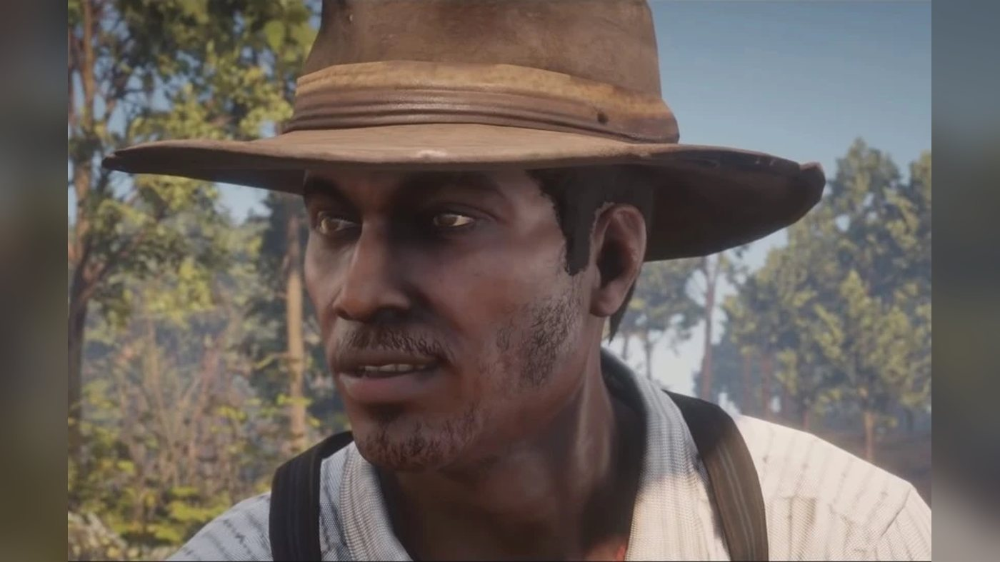
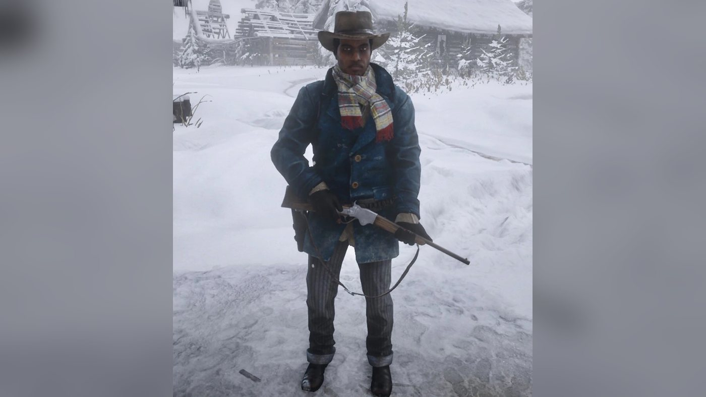
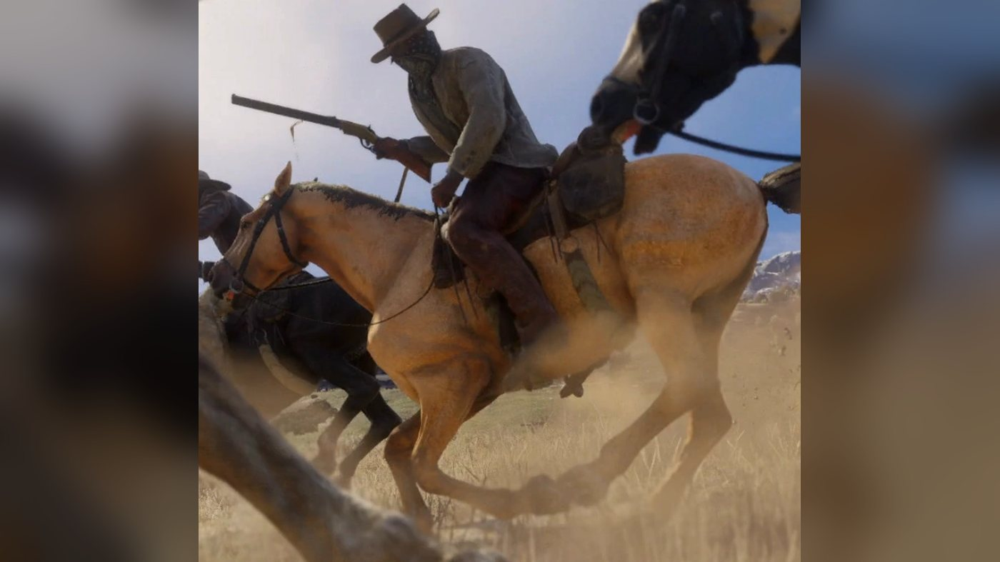
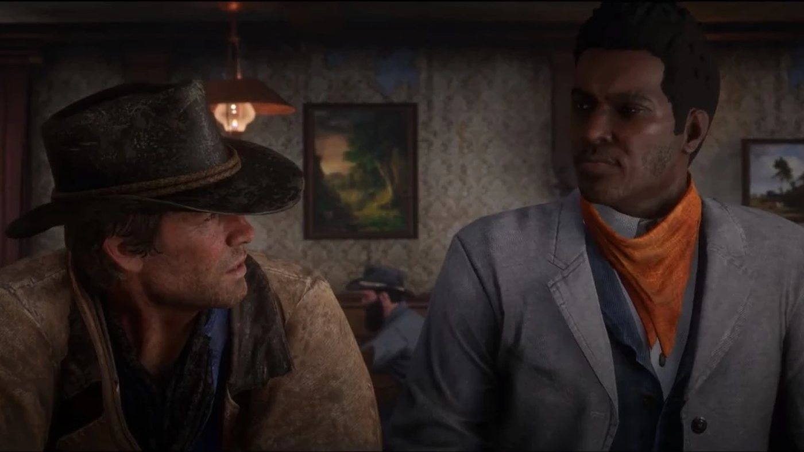
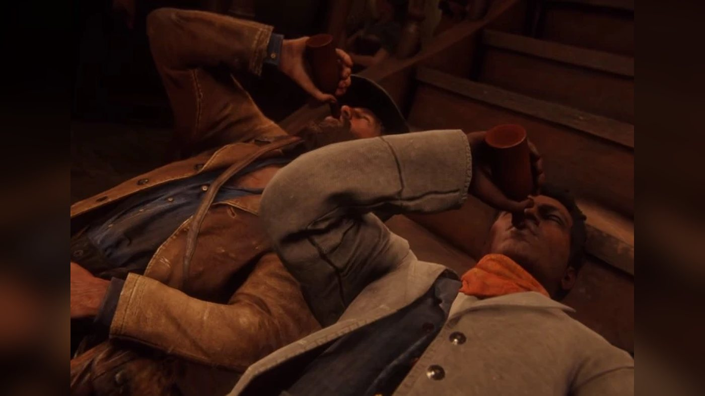
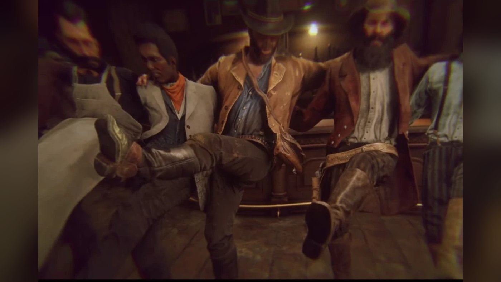
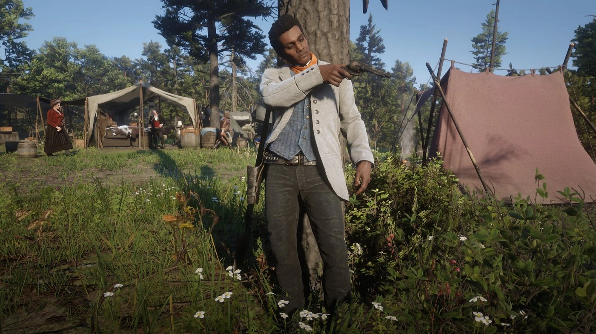
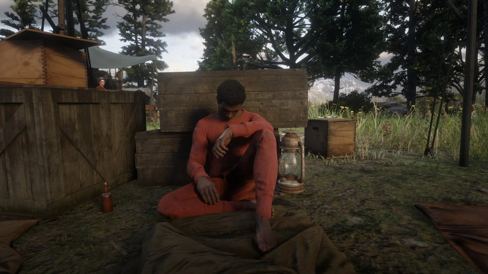
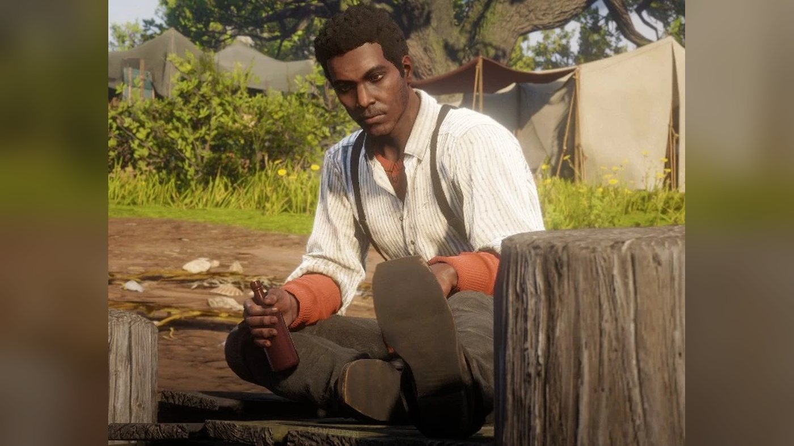
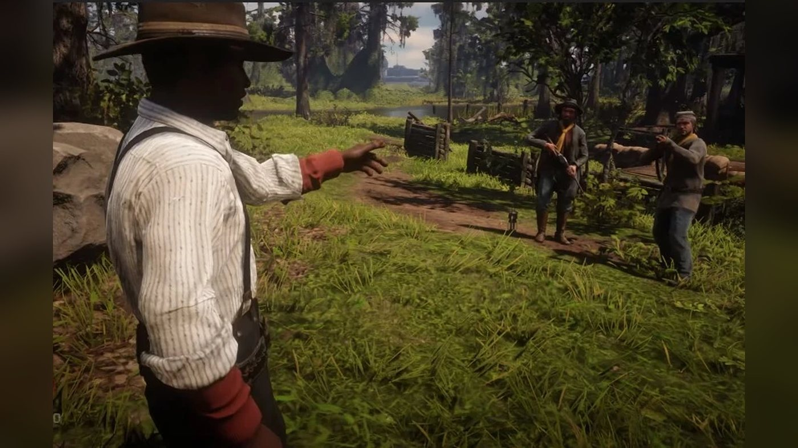
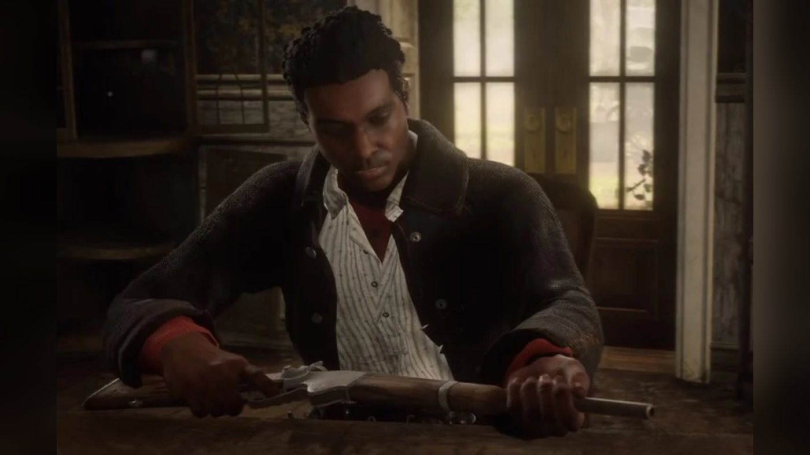
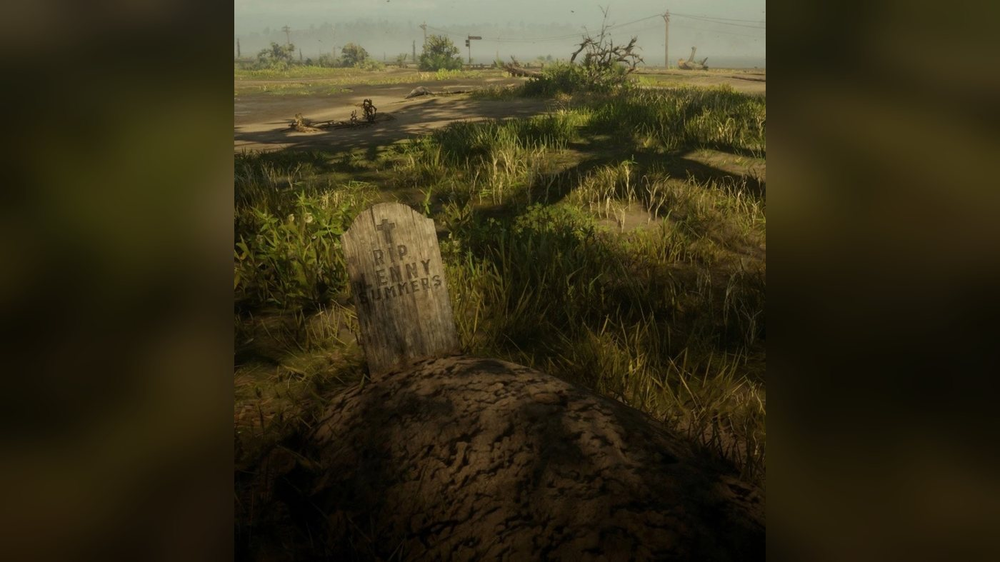
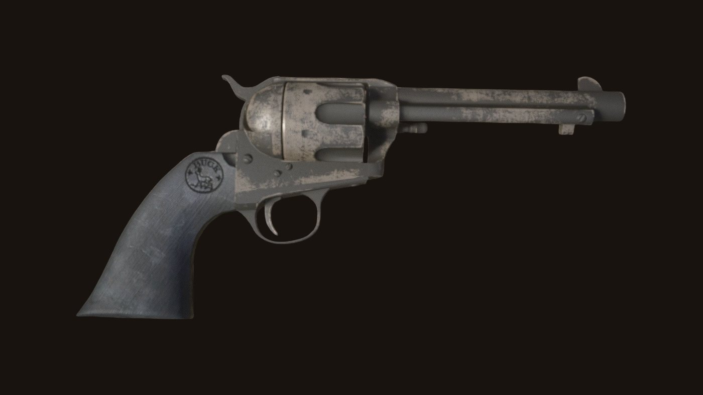
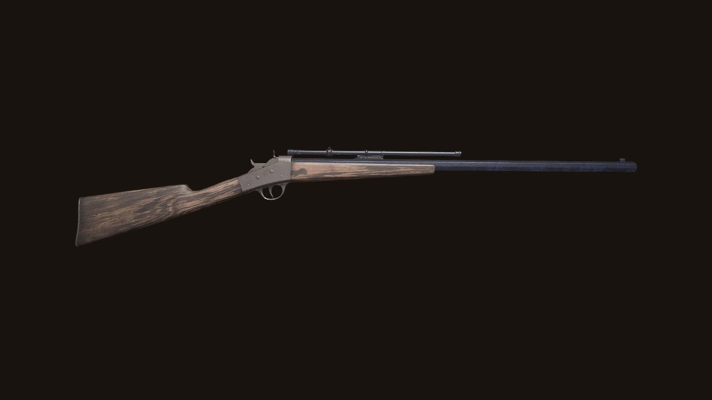